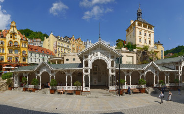

KARLOVY VARY
CO NAVŠTÍVIT
Lázně Karlovy Vary
- Císařské lázně (Lázně I) byly postaveny na sklonku 19. století podle architektů Ferdinanda Fellnera a Hermanna Helmera. V budově Císařských lázních se nacházelo 120 koupelen a kabin a také císařská vana. Zanderův sál sloužící původně jako tělocvična se na rozhraní 80. a 90. let 20. století změnil na kasino. V roce 2010 se stala budova lázní národní kulturní památkou.
- Vřídelní lázně (Lázně II) byly situovány poblíž Vřídla a nabízely vřídelní a uhličité koupele. V roce 1940 byly lázně zrušeny a v roce 1947 zbourány.
- Kurhaus Lázně(Lázně III) byly postaveny mezi lety 1864–1866 a svému účelu slouží do současnosti. Původně byly v budově parní lázně s bazénem a vany pro uhličité koupele a rašelinové zábaly.
- Nové Lázně (Lázně IV) slouží v současnosti jako nákupní centrum. V minulosti zde ale také sídlil městský úřad. Budova byla postavena koncem 19. století.
- Alžbětiny lázně (Lázně V) nesou jméno císařovny Alžběty Bavorské (Sissi). Budova byla postavena začátkem 20. století. Během rekonstrukce (60./70. léta 20. století) se staly lázně největším balneoprovozem na území Československa. Při rekonstrukci byly lázně doplněny také o bazén. Další rekonstrukce proběhla v roce 2002.
- Sluneční lázně (Lázně VI) jsou nedochovanou památkou. Lázně byly nejmladšími karlovarskými lázněmi postavenými v roce 1927. Budova byla zbourána v roce 2006 ze statických důvodů. Na místě budovy byl vybudován Bytový dům Lázně VI.

Kolonády+minerální prameny
Mlýnská Kolonáda
popis: Mlýnská Kolonáda byla postavena v letech 1871-1881 a je to pseudorenesanční kamenná kolonáda.
Je volně přístupná a vývěr pramene se nachází přímo v promenádní hale kolonády.
Je to největší karlovarská kolonáda a vyvěrá v ní 5 minerálních pramenů: Mlýnský pramen, pramen Rusalka,
Pramen knížete Václava, pramen Libuše a Skalní pramen.

cesta: Dostanete se k ní z lázeňského centra města od Vřídla přes Tržiště a dále Lázeňskou ulicí kolem Tržní kolonády po levém břehu říčky Teplá. Cesta je dlouhá asi 500 metrů a zabere Vám zhruba deset minut.
prameny:
Sadová Kolonáda
popis:
cesta: K Sadové kolonádě ve Dvořákových sadech dojdete z lázeňského centra města od Vřídla po levém břehu říčky Teplá kolem Mlýnské kolonády a Vojenského lázeňského ústavu. Cesta je dlouhá asi 800 metrů a zabere Vám zhruba čtvrt hodiny.
prameny:
Tržní Kolonáda
popis:
cesta: K Tržní kolonádě dojdete z lázeňského centra města od Vřídla přes Jánský most až na Tržiště. Vývěr pramene se nachází v promenádním prostoru Tržní kolonády. Cesta je dlouhá asi 200 metrů a zabere Vám zhruba pět minut. 
prameny:
Zámecká Kolonáda
popis:

cesta: K Zámecké kolonádě dojdete z lázeňského centra města od Vřídla přes Jánský most až na Tržiště, odkud vystoupáte na Zámecký vrch ke kolonádě. Vývěr pramene se nachází v v kruhovém sloupovém altánu. Cesta je dlouhá asi 200 metrů a zabere Vám zhruba pět minut.
prameny:
Vřídelní Kolonáda
popis:

cesta: Vřídelní kolonáda stojí přímo v lázeňském centru města nad říčkou Teplou v sousedství Divadelního náměstí.
prameny:
Altán pramene Svoboda
popis:

cesta: K altánu pramene Svoboda dojdete z lázeňského centra města od Vřídla po levém břehu říčky Teplá kolem Mlýnské kolonády až před Lázně III. Vývěr pramene se nachází přímo v dřevěném altánu. Cesta lázeňským centrem města je dlouhá asi 600 metrů a zabere Vám zhruba deset minut.
prameny:
Altán Aloise Kleina
popis:
cesta: K altánu Aloise Kleina dojdete z lázeňského centra města od Vřídla po pravém břehu proti proudu říčky Teplá kolem Grandhotelu Pupp a dále Goethovou stezkou až do parku před Richmondem. Vývěr pramene se nachází přímo v dřevěném altánu. Cesta lázeňským centrem města je dlouhá asi 1,5 kilometru a zabere Vám zhruba půl hodiny.
prameny:
Zámecká Věž

popis: Zámecká věž na skále nad Tržištěm v historickém centru města je posledním pozůstatkem malého gotického hrádku, který nechal vystavět císař Karel IV. patrně již v době kolem roku 1358. Během velkého požáru města v roce 1604 bývalý hrad vyhořel a změnil se ve zříceniny. Roku 1608 byla velká věž upravena na městskou hlásku. V roce 1766 byla věž po dalším požáru doplněna arkádovým ochozem, ze kterého byli slavnostně vítáni fanfárami významní hosté lázeňského města. Později se odtud každoročně slavnostně zahajovala lázeňská sezóna. V roce 1911 byl ke skále pod Zámeckou věží přistavěn mohutný výtah podle projektu Friedricha Ohmanna, autora secesní Zámecké kolonády.
otevírací doba: příležitostně
ceník:
RESTAURACE
Bagel Lounge
hodnocení: ⭐⭐⭐⭐⭐
cenové zařazení: $
adresa: T.G. Masaryka 825/45, Karlovy Vary 360 01 Czech Republic
kontakt: +420 720 022 123
otevírací doba:
Po-So 08:00 - 20:00
Ne 08:00 - 19:00
Ristorante-Pizzeria Palermo

hodnocení: ⭐⭐⭐⭐⭐
cenové zařazení: $$-$$$
adresa: Moskevska 1526/44, Karlovy Vary 360 01 Czech Republic
kontakt +420 773 583 892
otevírací doba: Po-Ne 11:00-22:00
Velkopopovicka pub

hodnocení: ⭐⭐⭐⭐⭐
cenové zařazení: $$-$$$
adresa: Petrin 1113/10, Karlovy Vary 360 01 Czech Republic
kontakt: +420 353 232 007
otevírací doba:
Po-Pá 11:00-22:00
So-Ne 12:00-22:00
DOPRAVA
 |
 |
 |
 |
 |
|
 |
|
|
|
|
|